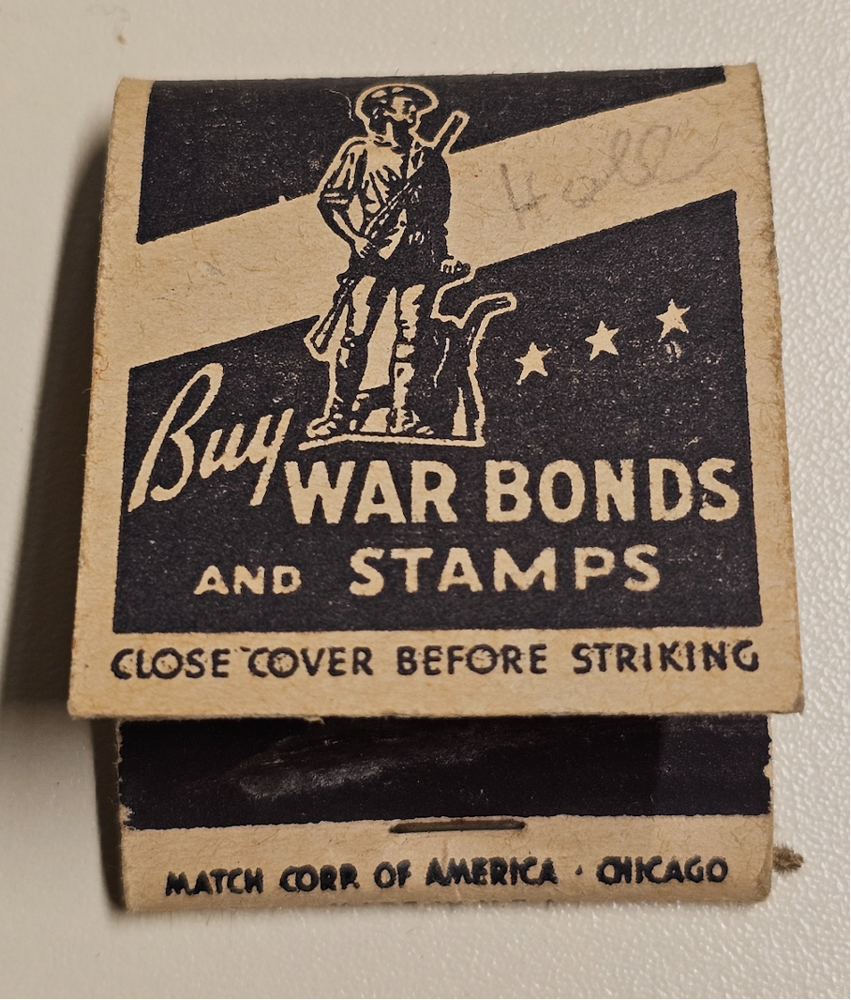

[SCANNING ARTIFACT: ML-22NN99]

USA, ca. 1942 - Match Corp. of America
PROPAGANDA-REKONSTRUKTION v1.0
Wählen Sie eine mediale Linse, um die Botschaft zu transformieren:
STATUS: BEREIT...
Warten auf Eingabe...
Bitte wählen Sie eine Analyse-Methode aus dem obigen Menü.
> Algorithmus: GPT-4_PRO_MODEL
> Location: Vorchdorf_Archive